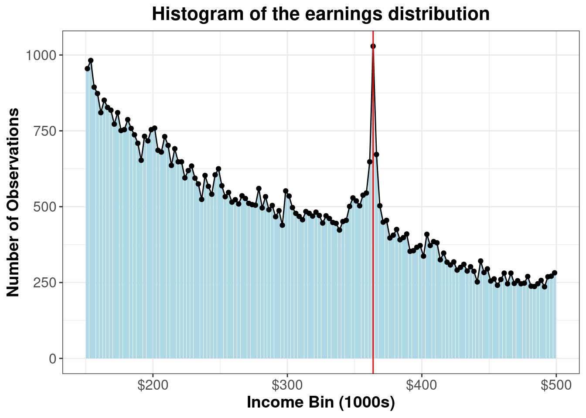

Now we will plot the publication-quality histogram of the earnings distribution:
library(ggtext) earning_dist <- data %>%ggplot(aes(x=income_bin, y = n)) +geom_col(fill ="lightblue") +geom_point() +# geom_smooth(method = "lm", se = FALSE, color = "black") +geom_line() +scale_x_continuous(labels = scales::label_number(scale =0.001, prefix ="$")) +geom_vline(xintercept =363750, color="red", shape="solid") +# annotate("text", label = "kink", x = 380000, y = 800, size = 5, colour = "black") +labs(title ="**Histogram of the earnings distribution**",x ="**Income Bin (1000s)**", y ="**Number of Observations**") +theme_bw() +theme(plot.title =element_markdown(size =16, hjust =0.5),axis.title.x =element_markdown(size =14),axis.title.y =element_markdown(size =14),axis.text.x =element_text(size =12),axis.text.y =element_text(size =12) )earning_dist

1.2 b.
We will be following Saez (2010) to construct the equation to retrieve the elasticity \(e\). Note for our case, the kink happens as \(z^* = 363750\) and marginal tax rate changes from \(0.21\) to \(0.28\). We need to use equation (5) in the paper to get the elasticity. The equation is as follows:
In order to compute \(B\), we need to decide \(\delta\) to calculate the width we will use to calculate excess bunching. We will use the “simplest method” mentioned in the paper which is to select \(\delta\) graphically such that the full excess bunching is included in the band \((z^* - \delta + z^* + \delta)\). In our case, it seems to be about \(\delta = 10\) (Note that since out data is in income bin of width 2,500, this is equivalent to 25,000 difference). Numerically, it will be calculated as follows (this is just following the equation (6) in the paper):
Finally, we can plug in the values we got from the data and get the elasticity \(e\). Here, we are just basically getting the solution by plugging in the empirical numbers we computed from the data into the main equation:
# Define the function whose root we want to findf <-function(e) { z <-365000 ratio <- (1-0.07) / (1-0.21) z * (ratio^e -1) * ( (h_min + (h_plus / ratio^e)) /2) - B}# Use uniroot to solve f(e) = 0 in a reasonable range for eresult <-uniroot(f, lower =-1, upper =1)# Extract the solutione_solution <- result$rootprint(e_solution)
There is no straightforward answer to this question. Before we started to consider the dynamic nature of the taxation policy, the consensus was that we should not tax the capital. The reason was similar to our consensus on not wanting to tax the commodity. By Atkinson-? result, we should only be taxing through income as taxing through commodity or capital will further distort the behavior of people.
But our consensus changes if we move onto a dynamic setting. In fact, some papers have shown that the capital taxation should be positive in the dynamic setting. The intuition for this is because in the dynamic setting people try to save more for the future to account for any possible risk in the future such as negative shock on their ability.Hence it leads to a negative fiscal externality for the government revenue. In order to alleviate this, the government should try to tax the capital. In this case, we could say it should tax the capital to internalize this negative externality.
However, setting positive capital taxation might not be that important in terms of policy perspective. This is because some papers have shown that while it is true that capital tax is positive in dynamic setting, its actual magnitude seems to be small (close to zero). Thus in real life policy, it might not make much of a difference whether you tax capital (very slightly) or not.
In the end, I think we can summarize it as follows:
In static model, it was not recommended to tax the capital.
In dynamic setup, the results from static case changed and the optiaml capital taxation should be positive.
However, even accounting for this the real life optimal tax for the capital should be near zero.